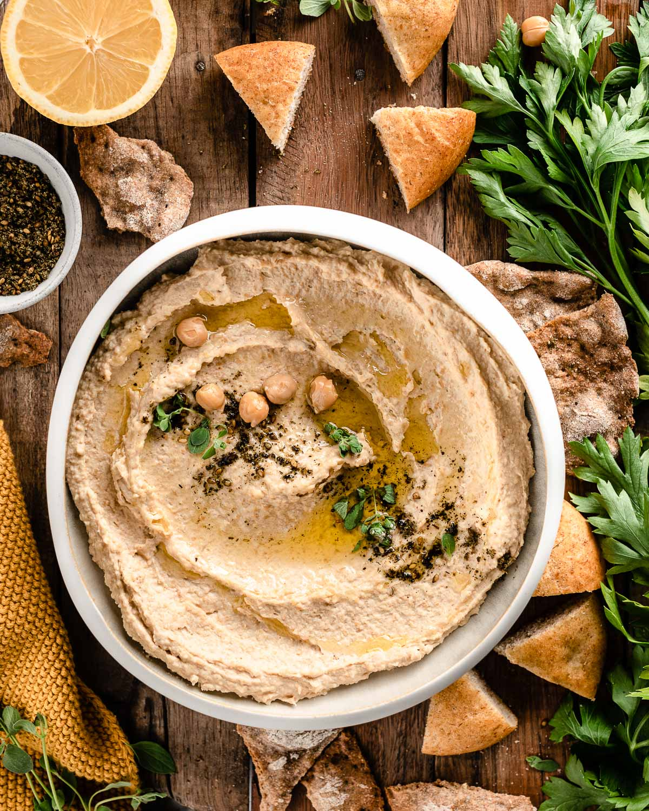

Description
This hummus is a family recipe passed down from many generations. Eat with warm pita bread.
Ingredients
- 2 cloves garlic, divided
- 1 can chickpeas (garbanzo beans), half the liquid reserved
- 4 tbsp lemon juice
- 2 tbsp tahini
- 1 tsp salt
- black pepper to taste
- 2 tbsp olive oil
Steps
- In a blender, chop garlic. Pour garbanzo beans into the blender, reserving about 1 tablespoon for garnish. Add reserved liquid, lemon juice, tahini, and salt to the blender. Blend until creamy and well mixed.
- Transfer the mixture to a medium serving bowl. Sprinkle with pepper and pour olive oil over the top. Garnish with reserved garbanzo beans.
Back to top
Back to recipe list